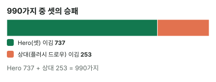

안녕하세요. 초급에서는 "에퀴티 = 이 팟에서 이길 확률"이라고만 했죠(B14).
그런데 계산기에 핸드를 넣으면 74.44% 같은 숫자가 나와요. 이 숫자는 어디서, 어떻게 나온 걸까요? 오늘은 그걸 직접 세어 보면서 에퀴티를 처음부터 제대로 잡아 볼게요. 다 읽고 나면 계산기 숫자가 "그냥 나오는 값"이 아니라 눈에 보이는 숫자가 될 거예요.
이 글에서 배울 것
- 에퀴티를 "이길 확률"보다 정확하게, 끝까지 갔을 때의 평균 몫으로 말하는 법
- 플랍 에퀴티를 990가지를 직접 세서 구하는 법, 프리플랍은 왜 다른 방법(몬테카를로)을 쓰는지
- 에퀴티 숫자를 정하는 세 가지: 지금 누가 앞섰나, 뒤진 쪽을 살릴 카드, 앞선 쪽이 되찾는 길
1단계. 에퀴티를 정확히 말하면
한 줄 정의
에퀴티 = 남은 카드가 모두 나왔을 때 그 팟에서 우리가 가져갈 평균 몫이에요.
"이길 확률"과 거의 같지만 하나가 달라요. 비기는 경우까지 넣어요. 이기면 팟 전부, 비기면 반, 지면 0으로 쳐서 평균을 내요.
비기는 건 언제일까요? 예를 들어 보드에 A-K-Q-J-T가 깔리면 두 사람 모두 보드의 스트레이트를 쓰게 돼서 팟을 반씩 나눠요. 이런 판은 "반 판 이긴 것"으로 셈해요. 오늘 플랍 예시들은 마침 비기는 경우가 없지만, 프리플랍 숫자에는 이런 반 몫이 들어가 있어요.
피자로 생각해 보기
에퀴티는 피자를 나누는 비율이에요. 아직 누가 먹을지 정해지진 않았지만, 지금 상태로 보면 우리 몫이 몇 조각인지 알 수 있죠.
그래서 두 사람의 에퀴티를 더하면 항상 팟 전체가 돼요. 한 사람 몫이 커지면 다른 사람 몫이 그만큼 줄어요. 피자 한 판을 둘이 나누는 것처럼요.
2단계. 플랍에서 직접 세어 보기 (정확한 계산)
에퀴티가 어디서 나오는지 보려면, 직접 세는 게 제일 좋아요. 플랍이 깔린 상황부터 볼게요.
용어 몇 개만 먼저
- 오버페어: 보드의 어떤 카드보다도 높은 포켓페어(예: 보드 7-6-2에 AA)
- 셋: 포켓페어가 보드의 같은 숫자와 만나 세 장이 된 것
- 양방 스트레이트 드로우: 9-8-7-6처럼 숫자 네 개가 이어지고 양쪽 끝(10과 5)이 모두 열려 있어서 어느 쪽이 나와도 스트레이트가 되는 드로우. A-K-Q-J처럼 한쪽이 막힌 경우는 한쪽(10)만 기다려요
- 넛 플러시 드로우: 그 무늬의 A를 들고 있어서, 맞으면 가장 높은 플러시가 되는 플러시 드로우
- 트립: 보드에 깔린 페어에 내 손의 한 장이 더해져 세 장이 된 것(예: 손에 9♠, 보드에 9·9). 손에 페어가 있는 셋과 구별해요
- 아웃츠: 나오면 내가 이기게 되는 남은 카드
몇 가지 경우가 있을까
플랍에서는 두 사람 손 4장과 보드 3장, 모두 7장이 보여요. 덱 52장에서 빼면 남은 카드는 45장이에요.
이 45장 중에서 턴과 리버로 2장이 나와요. 나올 수 있는 두 장 조합은 45 × 44 ÷ 2 = 990가지예요. (턴·리버 순서만 바뀐 건 같은 결과라 2로 나눠요.)
990가지를 하나도 빼지 않고 깔아 보고 누가 이기는지 세면, 그게 정확한 에퀴티예요. 어림이 아니라서 다시 세도 똑같이 나와요.
예시 A — 셋 vs 넛 플러시 드로우
Hero 
 vs 상대
vs 상대 
 · 보드
· 보드 


Hero는 7 셋, 상대는 넛 플러시 드로우예요. 990가지를 다 세면 이래요.
| 결과 | 조합 수 | 어떻게 |
|---|---|---|
| Hero 이김 | 737 | 셋 그대로 396 · 풀하우스 297 · 포카드 44 |
| 상대 이김 | 253 | 플러시 244 · A-2-3-4-5 스트레이트 9 |
| 비김 | 0 |
그래서 Hero 에퀴티는 990가지 중 737가지, 약 74.44%예요. 상대는 990가지 중 253가지, 약 25.56%고요. 둘을 더하면 990가지 전부, 피자 한 판이 돼요.

표에서 눈여겨볼 곳이 하나 있어요. 상대가 하트를 맞춰 플러시 이상을 만든 조합은 360가지인데, 플러시로 이긴 건 244가지뿐이에요. 나머지 360 − 244 = 116가지는 플러시를 맞추고도 졌어요. 어떻게 그런지는 아래 '왜 그럴까'에서 따라가 봐요.
또 하나, 상대가 이긴 253가지 안에는 플러시가 아닌 스트레이트 9가지도 있어요. 턴·리버로 3과 5가 나오면 상대는 A-2-3-4-5 스트레이트가 돼요. 이렇게 "주된 드로우" 말고 숨은 길까지 다 세는 게 정확한 계산이에요.
예시 B — 드로우 vs 오버페어
Hero 
 vs 상대
vs 상대 
 · 보드
· 보드 


Hero는 9-8-7-6 양방 스트레이트 드로우예요. 스페이드가 턴·리버에 연달아 나오면 플러시도 돼요. 지금은 페어도 없죠. 그런데 990가지를 세면 이래요.
| 결과 | 조합 수 | 어떻게 |
|---|---|---|
| Hero 이김 | 365 | 스트레이트 307 · 플러시 40 · 스트레이트 플러시 3 · 투페어 9 · 트립 6 |
| 상대 이김 | 625 | 원페어 그대로 270 · 투페어 280 · 트립 47 · 풀하우스 27 · 포카드 1 |
| 비김 | 0 |
Hero 에퀴티는 990가지 중 365가지, 약 36.87%예요. 상대 AA는 약 63.13%고요.
페어 하나 없는 핸드가 3분의 1 넘게 가져가요. 대부분은 스트레이트에서 나오지만, 9와 8이 둘 다 붙는 투페어처럼 생각 못 한 길도 조금씩 보태요.
상대 쪽도 보세요. AA가 이긴 625가지 중에는 원페어 그대로 이긴 판만 있는 게 아니에요. 보드에 짝이 생겨 풀하우스가 되거나 남은 A 두 장이 다 나와 포카드가 된 판도 있어요. 이런 판에서는 Hero가 스트레이트나 플러시를 맞춰도 져요.
3단계. 프리플랍은 왜 "약"일까 (몬테카를로)
프리플랍에서는 보드 5장이 다 남아 있어요. 나올 수 있는 보드가 백만 가지가 넘어서 플랍처럼 하나하나 세기엔 너무 많아요.
그래서 카드를 무작위로 20,000번 깔아 보고 결과를 세요. 이런 방법을 몬테카를로라고 해요. 여론조사처럼 일부만 뽑아 보는 거라 "약"이 붙고, 다시 돌리면 아주 조금 달라질 수 있어요.
| Hero | 상대 | Hero 에퀴티 | 상대 에퀴티 |
|---|---|---|---|
| A♠A♥ | K♦K♣ | 약 82.06% | 약 17.94% |
| A♠K♥ | Q♦Q♣ | 약 42.25% | 약 57.75% |
AA는 KK에게 크게 앞서요. 반면 AK는 QQ에게 뒤져요. AK는 "좋은 핸드"지만 아직 페어가 아니라서, 이미 페어인 QQ보다 몫이 작아요.
왜 그럴까: 에퀴티를 정하는 세 가지
이제 표의 숫자가 왜 이렇게 나왔는지 풀어 볼게요. 에퀴티는 결국 세 가지로 정해져요.
① 지금 누가 앞서 있나
남은 카드가 아무것도 바꾸지 않으면 앞선 쪽이 가져가요. 예시 A에서 Hero가 셋 그대로 이긴 396가지가 바로 이 몫이에요. 지금 앞선 쪽은 이렇게 기본 몫을 갖고 시작해요.
② 뒤진 쪽을 살려 주는 카드가 몇 장인가
뒤진 쪽은 살려 줄 카드가 나와야 이겨요. 그래서 살려 주는 카드가 많을수록 뒤진 쪽 몫이 커져요.
- KK vs AA: KK가 이기려면 K가 떨어져 셋이 돼야 해요. 아니면 보드에 다이아·클럽이 잔뜩 깔리거나 숫자가 이어져서, KK의 K로 플러시·스트레이트가 되는 드문 경우뿐이에요. 남은 K는 2장뿐이죠. 그래서 KK 몫이 약 17.94%로 작아요
- 9♠8♠ vs AA: 지금 페어도 없지만 10이나 5(스트레이트), 스페이드 연속(플러시), 9·8 투페어처럼 살아날 길이 많아요. 그래서 365가지, 약 36.87%나 가져가요
- AK vs QQ: KK는 살릴 카드가 K 두 장뿐이었지만, AK는 A든 K든 하나만 맞으면 돼서 살릴 카드가 훨씬 많아요. 그래서 약 42.25%로 절반에 가까워요. 그래도 지금은 QQ가 페어로 앞서 있어서, A나 K가 안 나오면 그대로 져요. 그만큼 절반에 못 미쳐요
③ 앞선 쪽이 다시 뒤집을 길이 있나
이게 계산기 없이 놓치기 쉬운 부분이에요. 예시 A를 순서대로 따라가 볼게요.
상대 A♥K♥는 턴이나 리버에 하트가 한 장만 나와도 플러시가 돼서 Hero 셋을 넘어요. 그런데 턴에 하트가 나와 상대가 플러시를 맞춰도, 리버에 보드와 같은 숫자(4나 2, 턴 카드와 같은 숫자)가 나오면 Hero는 풀하우스가 되고, 남은 7이 나오면 포카드가 돼서 다시 이겨요.
순서가 반대여도 마찬가지예요. 턴에 먼저 보드에 짝이 생기면(예: 턴 4♣) 리버에 하트가 와도 Hero는 이미 풀하우스예요. 턴이든 리버든 보드에 짝이 생기면, 하트가 언제 나와도 Hero가 이겨요.
2단계 표의 116가지가 바로 이거예요. 상대가 플러시를 맞춘 360가지 중 116가지는 여전히 Hero 몫이라, Hero 몫이 약 74.44%까지 올라가요.
예시 B에도 같은 일이 있어요. Hero 9♠8♠가 스페이드 두 장으로 플러시를 맞춰도, 그게 A♠6♠나 A♠2♠라면 AA는 트립 A에 보드 짝이 더해진 풀하우스가 돼서 이겨요. 뒤진 쪽이 맞춘 판도 앞선 쪽이 되찾을 수 있는 거예요.
셋을 한 문장으로
에퀴티는 "지금 앞선 몫 + 뒤진 쪽이 살아나는 몫 − 앞선 쪽이 되찾는 몫"을 990가지(또는 수많은 보드)에 걸쳐 센 결과예요. 그리고 카드가 한 장 나올 때마다 ①·②·③이 바뀌어요. 이게 왜 중요한지는 바로 아래 실수 2에서 봐요.
자주 하는 실수
실수 1. 크게 앞선 것을 이긴 것으로 착각하기 AA는 KK에게 약 82.06%로 크게 앞서지만, 남은 약 17.94%는 KK 몫이에요. 그러니 AA로 KK에게 지는 판도 나와요. 그 판 하나를 보고 "AA로 올인하면 안 되겠다"고 결론 내리면 몫을 결과로 착각한 거예요. 에퀴티는 이번 판의 예언이 아니라, 같은 상황을 여러 번 했을 때의 평균 몫으로 읽어요.
실수 2. 한 번 구한 에퀴티를 계속 쓰기 예시 B의 약 36.87%는 턴·리버 두 장이 남은 플랍 기준이에요. 턴에 드로우가 안 맞으면 남은 카드가 한 장이라 살아날 기회가 줄고, 몫도 더 작아져요. 스페이드 연속으로 만드는 플러시 40가지 같은 길은 턴에 스페이드가 안 나오면 아예 사라지죠. 플랍 숫자를 턴까지 들고 가면 몫을 크게 잡게 돼요. 거리마다 지금 보드로 다시 생각해요.
실수 3. 드로우의 아웃츠를 전부 "이기는 카드"로 세기 예시 A에서 상대 쪽 하트는 9장 남아 있어요. 그런데 그중 2♥는 나오는 순간 보드에 2가 두 장이 돼서, 상대가 플러시를 맞추는 동시에 Hero가 풀하우스가 돼요. 하트인데도 상대에게는 이기는 카드가 아닌 거죠. 상대가 이미 셋 이상이면, 내 아웃츠 중에 보드에 짝을 만드는 카드가 섞여 있는지 먼저 봐요.
"50% 넘으면 무조건 콜해도 되는 거 아니에요?"
좋은 질문이에요. 꼭 그렇진 않아요. 에퀴티는 "필요 에퀴티"(B06)와 같이 봐야 해요. 칩으로 직접 따라가 볼게요.
팟이 10인데 상대가 5를 걸었어요(하프팟). Hero가 5를 콜하면 콜한 뒤 팟은 20이에요. Hero 에퀴티가 25%라면, 끝까지 갔을 때 Hero의 평균 몫은 20 × 0.25 = 5예요. Hero가 낸 5와 똑같죠. 그래서 이 벳의 필요 에퀴티가 25%인 거예요.
에퀴티가 25%보다 크면 평균 몫이 낸 돈보다 커지고, 작으면 낸 돈보다 작아져요. 그러니 에퀴티 > 필요 에퀴티면, 더 이상 베팅이 없을 때 콜이 이득이에요(B14). 절반이 안 돼도 25%만 넘으면 콜이 남고, 반대로 절반이 넘어도 상대 벳이 아주 크면 모자랄 수 있어요.
예시 B처럼 뒤에 베팅이 남은 플랍에서는 앞으로 더 낼 돈도 생각해야 해서, 이 비교만으로 끝나지 않아요. 그 부분은 바로 다음 글 I03에서 다뤄요. 그리고 실전에서는 상대 핸드를 하나로 알 수 없어요. 여러 핸드 중 하나라는 점을 넣는 법은 I06(핸드 대 레인지)에서 배워요.
선생님의 한마디
- 에퀴티 = 끝까지 갔을 때 우리 평균 몫, 두 사람 몫을 더하면 팟 전체
- 프리플랍은 몬테카를로(약), 플랍부터는 정확한 계산
- "좋은 핸드"와 "앞서 있는 핸드"는 달라요(AK vs QQ)
연습 문제
홀덤학습 에퀴티 계산기로 같은 핸드를 넣어 확인해 보세요.
문제 1. A♠K♠ vs 2♥2♦, 프리플랍. 누가 앞설까요?
정답 보기
거의 반반이에요. A♠K♠ 약 49.92%, 2♥2♦ 약 50.08%(몬테카를로). 작은 페어도 페어라서, 같은 무늬 AK와 비슷한 몫을 가져요.
문제 2. Hero J♥T♥ vs 상대 A♠K♦, 보드 9♥ 8♣ 2♦. 누가 앞설까요?
정답 보기
Hero 약 52.22%, 상대 약 47.78%. 990가지 중 Hero가 517가지, 상대가 473가지에서 이겨요. Hero는 양방 스트레이트 드로우(Q나 7)에 하트 두 장이 연달아 오면 플러시도 돼서, 오버카드 두 장(보드보다 높은 카드 두 장)인 AK보다 조금 앞서요.
핵심 정리
- 에퀴티(평균 몫)를 필요 에퀴티와 비교해서, 더 이상 베팅이 없다면 에퀴티가 클 때 콜이 이득이에요
- 플랍 에퀴티는 턴·리버 990가지를 다 센 결과예요. 이기는 조합 ÷ 990(비기면 반씩)
- 몫을 정하는 건 ① 지금 누가 앞섰나 ② 뒤진 쪽을 살릴 카드 수 ③ 앞선 쪽이 되찾는 길 세 가지예요. 되찾는 길이 있으면 드로우의 몫은 보기보다 작아요
- 테이블에서는 이 순서로 물어요: 지금 누가 앞섰지? → 뒤진 쪽은 몇 장으로 살아나지? → 그 카드가 나와도 앞선 쪽이 되찾는 길은 없나?
정리하며
오늘은 에퀴티를 "끝까지 갔을 때 우리 평균 몫"으로 정의하고, 플랍에서 990가지를 직접 세어 숫자가 어디서 나오는지 봤어요.
셋 vs 넛 플러시 드로우는 990가지 중 737가지를 Hero가 가져갔어요. 그중에는 상대가 플러시를 맞추고도 진 116가지가 숨어 있었죠. 페어 없는 드로우도 365가지로 3분의 1 넘게 가져갔고요. 이 숫자들은 지금 누가 앞섰는지, 뒤진 쪽을 살려 줄 카드가 몇 장인지, 앞선 쪽이 다시 뒤집을 길이 있는지로 설명돼요.
바로 다음 글 I03에서는 실수 2에서 본 두 장 남았을 때와 한 장 남았을 때의 차이가 플랍 플러시 드로우 콜을 어떻게 바꾸는지 봐요. 상대가 여러 핸드 중 하나일 때 에퀴티를 구하는 법은 그 한 편 뒤인 I06에서 배워요.
AI 작성 · 숫자는 계산 검증 (프리플랍은 몬테카를로 20,000번, 플랍은 전부 세기)